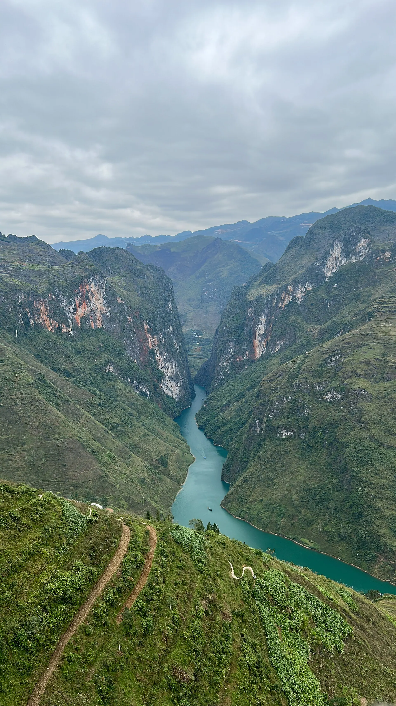

乌头粥（Cháo ấu tẩu）
用乌头根熬的粥，微苦带香——寒夜暖身。
示意图: 河江集市
同文喀斯特高原是联合国教科文组织世界地质公园，也是公路旅行者的天堂。马皮冷山口盘旋在深谷之上，侬桂河碧绿如玉，龙古旗台标志着祖国最北端，秋天荞麦花把山坡染成粉色。
正在加载天气...
点击月份查看是否适合出行
On the 26th–27th of the third lunar month in Meo Vac – a unique highland gathering.
Book Meo Vac homestays early; mountain roads get busy.
Terraces turn gold – best from late September to early October.
Weekends are crowded and homestays fill up fast.
Pink-purple buckwheat flowers cover the hills around Dong Van and Sung La.
Weekends peak – go midweek if you can.
农历节日每年日期不同——出发前请确认官方日期。
用乌头根熬的粥，微苦带香——寒夜暖身。
示意图: 河江集市热骨汤配鸡蛋卷粉——河江式早餐。
示意图: 卷粉竹筒烤山米饭，配芝麻盐或烤肉。
Au tau porridge, egg rice rolls
Đường Nguyễn Thái Học, TP Hà Giang 更新于 2026/09 报错Rice rolls in bone broth, thang co
Phố cổ Đồng Văn 更新于 2026/09 报错Thang co, corn wine, buckwheat cakes
Chợ Đồng Văn 更新于 2026/09 报错Smoked buffalo, smoked sausages
Thị trấn Yên Minh 更新于 2026/09 报错Sour pho for breakfast on the road
Thị trấn Tam Sơn, Quản Bạ 更新于 2026/09 报错Black-chicken hotpot with H'Mong greens
Thị trấn Mèo Vạc 更新于 2026/09 报错Village meal: smoked pork, bamboo shoots, beans
Chân cột cờ Lũng Cú 更新于 2026/09 报错Tay family meal with stream fish
Làng Du Già, Yên Minh 更新于 2026/09 报错每人参考价格。点击地址可在 Google 地图查看营业时间和最新评价。
骑摩托车走 350 公里越南最美山路。
穿越东南亚最深的峡谷 Tu San。
站在越南最北端的神圣之地。
充满高原生活气息的周日早市。
根据此目的地和月份推荐（在行程部分选择出发日期可更改月份）。勾选已打包的物品方便记忆。
发现价格、开放时间变了或店铺已关门？ 报错
300k–700k / 晚
Rest after the night bus and rent your scooter.
250k–600k / 晚
The main overnight stop before Ma Pi Leng.
300k–700k / 晚
Rammed-earth houses near the Lung Cu flag tower.
Sleeper bus Hanoi – Ha Giang ~6–7 h (often overnight). Ride the Dong Van – Ma Pi Leng loop on a scooter or hire an "easy rider" driver.
| 从河内出发 |
|
|---|---|
| 从岘港出发 |
|
| 从胡志明市出发 |
|
预计行程时间，每人单程经济票价——仅供参考。加粗的是推荐方式。
两人一晚参考房价，春节、假日和周末更贵。Việt Travel 不从预订网站收取佣金。
Việt Travel · 宣光（原河江） · 最佳时间: 10 月 – 11 月（荞麦花）
Rent a motorbike or hire an easy rider, check in at the Km0 marker.
Quan Ba Heaven's Gate, the Fairy Twin Mountains and Yen Minh pine forest.
夜间散步片刻，然后回去休息
The Vuong family mansion and Tham Ma slope.
Climb Lung Cu flag tower – Vietnam's northernmost point.
夜间散步片刻，然后回去休息
Take a boat on the Nho Que river, then head to Meo Vac.
Join the love market (if in season) and stay in Meo Vac.
夜间散步片刻，然后回去休息
行程结束：退房，购买当地特产后返程。
在住处吃早餐（常含在房费中）
Stay in Du Gia with a Tay family around the campfire.
夜间散步片刻，然后回去休息
行程结束：退房，购买当地特产后返程。
在住处附近当地人多的小店吃早餐
Continue to Hoang Su Phi and its nationally listed rice terraces.
Visit Nam Hong village and ancient shan tuyết tea hills.
Back in Ha Giang city for egg rice rolls.
行程结束：退房，购买当地特产后返程。
明细：预算
明细：舒适
明细：预算
明细：舒适
明细：预算
明细：舒适
不含前往河江的机票/交通。参考价格，随季节变动。
想去多个地方？把河江和其他目的地组合起来吧。
分享你的经历
读者照片
还没有照片——来第一个分享你在河江的瞬间吧！
分享你的照片